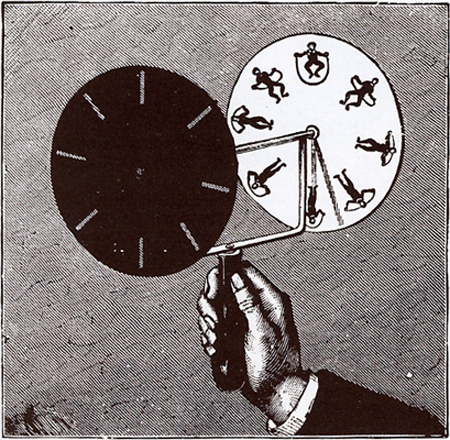
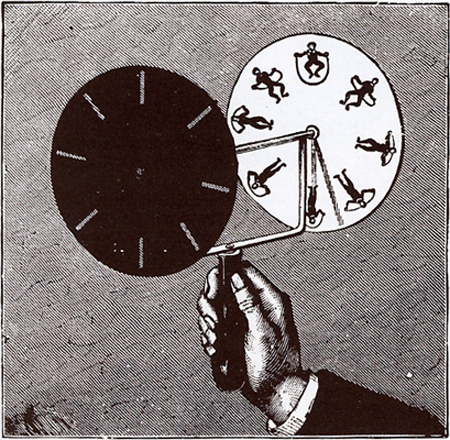

The phenakistiscope (also known by the spellings phénakisticope or phenakistoscope) was the first widespread animation device that created a fluent illusion of motion. Dubbed Fantascope and Stroboscopische Scheiben ('stroboscopic discs') by its inventors, it has been known under many other names until the French product name Phénakisticope became common (with alternative spellings). The phenakistiscope is regarded as one of the first forms of moving media entertainment that paved the way for the future motion picture and film industry. Like a GIF animation, it can only show a short continuous loop.
The phénakistiscope usually comes in the form of a spinning cardboard disc attached vertically to a handle. Arrayed radially around the disc's center is a series of pictures showing sequential phases of the animation. Small rectangular apertures are spaced evenly around the rim of the disc. The user would spin the disc and look through the moving slits at the images reflected in a mirror. The scanning of the slits across the reflected images keeps them from simply blurring together so that the user can see a rapid succession of images that appear to be a single moving picture.
Unlike the zoetrope and other successors, common versions of the phénakisticope could only practically be viewed by one person at a time.
 

The phenakisticope was invented almost simultaneously around December 1832 by the Belgian physicist Joseph Plateau and the Austrian professor of practical geometry Simon Stampfer.
As a university student Plateau noticed in some early experiments that when looking from a small distance at two concentric cogwheels that turned fast in opposite directions, it produced the optical illusion of a motionless wheel. He later read Peter Mark Roget's 1824 article Explanation of an optical deception in the appearance of the spokes of a wheel when seen through vertical apertures which addressed the same illusion.
Peter Mark Roget claimed in 1834 to have constructed several phénakisticopes and showed them to many friends as early as in the spring of 1831, but as a consequence of more serious occupations he did not get around to publishing any account of his invention.